{kind=link}
{kind=link}
{kind=link}
{kind=link}
{kind=link}
{kind=link}
{kind=link}
{kind=link}
{kind=link}
{kind=link}
{kind=link}
{kind=link}
{kind=link}
{kind=link}
{kind=link}
{kind=link}


Planet Models 1/48 P-40Q-2 Warhawk
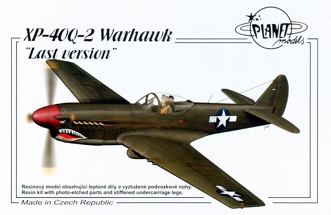
Kit #104
MSRP $77.50
Images and text Copyright � 2006 by Matt Swan
Developmental Background
When Dr. Donovan R. Berlin laid the foundation for the P-40 in 1935 he designed an agile, but lightly-armed fighter equipped with a radial, air-cooled engine designated P-36. The Curtiss-Wright Corporation developed this into the Allison powered P-40 Warhawk that saw action with the British as the Tomahawk and with the AVG in China. The aircraft was not on equal footing with the Axis aircraft in these theaters being slower with poor climb and maneuverability but Allied pilots still found ways to make it an effective fighter using its higher weight to propel it into power dives making slashing attacks. As a ground support fighter it performed well however it was soon eclipsed by new designs from several manufactures.
In an attempt to regain the leading edge Curtiss took three late model airframes, two P-40K�s and a P-40N and heavily modified these to produce the XP-40Q. With revised cooling systems, two-stage superchargers, and structural changes which markedly altered their appearance speed increased to 422 mph at 20,500 feet, making them the fastest of all the P-40s. An altitude of 20,000 feet could be reached in 4.8 minutes, and service ceiling was 39,000 feet. Four 0.5-inch machine guns were carried by the prototypes. Wingspan was 35 feet 3 inches and length was 35 feet 4 inches but even with all these changes the type was still inferior to the Mustangs and Thunderbolts currently rolling off assembly lines. The project was abandoned and the production life of the P-40 Warhawk ended with the N model but the story still has one more chapter. One of the XP-40Q aircraft was used briefly as an air racer. The second prototype, registered NX300B, was an unofficial starter in the 1947 Thompson Trophy race and was holding fourth place when it caught fire and had to drop out of the race so ending the Warhawk legacy.
The Kit
Planet Models has a good history of making esoteric resin kits in both 1/72 and 1/48 scale and has continued this with the XP-40Q-2. All the pieces are sealed in separate compartments of a long plastic bag and at first glance there does not appear to be a lot to this kit. The fuselage pieces are cavity molded with insets for the cockpit side walls and show nice, crisp, clean, consistent panel lines. There is some slight warpage of the fuselage right where the cockpit insets are but this seems to pull out fairly easily. The wings are cast as a single solid core piece with detail included inside the wheel wells. As with the fuselage the panel lines are all well defined and seem proportional to the scale. There is some minor flash on the parts, some casting leftovers around the wingtips and a few micro bubbles around the trailing edge. When test fitting the three main pieces the fuselage panel lines match up very nicely and there does not seem to be much of a gap at the fuselage seam. However there will need to be some filling done around the wing root area.
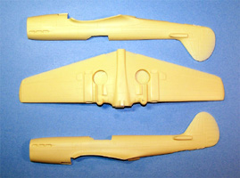
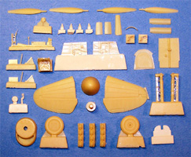
Finer detail pieces are contained in two more bubbles within the primary parts bag. First we have the main landing gear � these are actually heavy lengths of wire with resin cast around them so they will easily support the weight of the model when complete. Unfortunately the tail gear is a very fine piece of resin with no wire support. It looks like this piece will collapse very easily. Individual exhaust ports are provided along with separate propeller blades and a variety of nice little pieces to help flush out the cockpit and detail the control surfaces. Cannons are included as separate pieces to be attached to the leading edge of the wing and two thirds of them display micro bubbles right in the tip of the barrel and look to be most challenging to repair. You may click on the small parts images to view larger pictures. All told we have fifty eight resin pieces within the package.
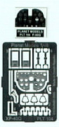
In addition to the resin parts we also have two sets of vacuformed clear parts which is nice because you just might need a back-up, especially if you are planning on modeling this with the canopy open. The clear pieces show excellent clarity, well defined frame lines and no vacuformer dimples in places that could cause a problem. Lastly we have a small fret of photo etched parts and an acetate instrument panel. The photo etched fret includes the instrument bezels, rudder pedals and a few assorted detail pieces for a total of seventeen pieces on the fret. This gives us a grand total of seventy seven pieces in the box.
Decals and Instructions
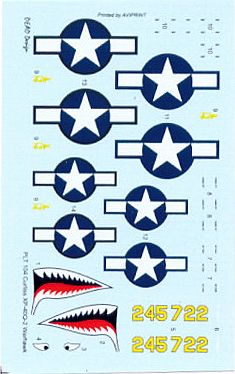
Instructions come as three A4 size sheets printed on both sides. There is a short historical introduction to the aircraft and a complete parts map on the first sheet. One page is devoted to the cockpit assembly and includes some brief painting instructions � very brief. The next three pages are all exploded view assembly steps again with very limited painting instructions. The last page covers exterior painting and decal placement for two aircraft; one in olive drab and one in silver.
Decals are provided on a small sheet and include basic national markings, one set of aircraft numbers, sharks teeth (of course) and a variety of small service stencils. The decals show good print registry and color density and also seem to be adequately thin.
Conclusions
This certainly seems like a lot of money to pay to have a model of the P-40Q but until AM Tech gets off their collective butts and released the promised injection molded kit, this is the only game in town. The parts have good detail and seem to fit together fairly well. Overall kit detail is good but there are plenty of micro bubbles in inconvenient places that will need repair and I�m sure more will show up once some primer hits the kit. Decals are okay and historically accurate for the two offered but for the price I would have expected at least a set for the Thompson Trophy racer or even a theoretically operational aircraft.
It seems that should you be a collector or fan of Warhawks that it is a no-brainer you should have an example of the last of the line for your collection. The price is somewhat staggering for what you get and it is not something for beginners to attempt. I give this kit a fair rating.
12/31/06 Construction
All resin kits are not that different from plastic kits. You use different types of glues and may need to pin some parts to increase joint strength but essentially you have a collection of parts and a set of directions. As with any plastic model the construction begins with the interior cockpit area. What is different about this kit vs. many plastic aircraft is that the cockpit tub is not pre-assembled then inserted into the fuselage; this is aimed more at completing panels and then building the pit into the fuselage. The parts are cleaned up, what pre-assembly can be done is completed and the pieces are attached to a strip of masking tape for basic painting. Once dry the details are painted with various colors of enamels. 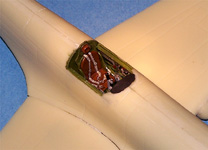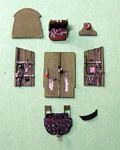
The dash looks fairly straight forward with a back plate, acetate panel and PE cover panel. I painted the back side of the acetate sheet first with white then went for assembly. A problem cropped up right away, the acetate sheet is printed backwards and I should have painted the front white and inserted it backwards to match the PE cover. I ended up slicing the acetate sheet apart and gluing it in by pieces to get everything to line up properly but at last the basic cockpit was ready.
Now the panels are assembled into the fuselage and the fuselage is closed up. I used medium gap filling superglue to close the fuselage being careful to get all the panel lines aligned properly then hit the seam with some accelerator. Any glue that was proud of the surface was immediately shaved off with a razor knife before it could harden completely. Using a toothpick I laid a bead of Mr. Surfacer 500 along the seam. I�m also able to attach the single piece wing at this time. 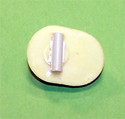
While the wing fits very nicely from front to back there is a slight step at the wing/fuselage joint so a couple layers of Mr. Surfacer 500 went in there. While this was curing I took a look at the nose piece. A movable propeller is not something you generally expect to see on a resin kit but this one has that feature engineered into it. If you follow the kit plans you need to attach the spinner now then place all this onto the nose of the fuselage but I do not like that approach as I prefer to paint the spinner and blades separately and attach them last. To achieve this I cut a slot into a piece of scrap plastic then superglued this over the back side of the propeller shaft to act as a retaining plate. Now I can attach the nose and not worry about the spinner.
The seam around the nose gets treated with Mr. Surfacer 500 and when dry, sanded smooth. I plan on doing this model in a natural metal finish so all sanding has to be followed with a good polishing to remove any surface blemishes. The elevators are attached and the seams treated like all the other seams. Some modelers may suggest pinning the elevators but I really did not see the need here. The parts are not that large or heavy and I don�t expect to be slinging the model around by its tail so just medium superglue was used here. After every rough spot I could find had been smoothed out I cleaned out all the panel lines with the tip of my razor knife then started looking at small exterior detail pieces like the wing cannons. These come as separate pieces and must be cleaned up and attached. Once removed from the pour stub I used a round file to clean the attachment point and create the same curvature as the wing leading edge. These went on with more superglue. Next I�ll be looking at the small photo etched exterior details. In the images below you see two P-40s, while I am working on this build I am also working on the Parrot Head P-40N � you just can�t have too many P-40s.
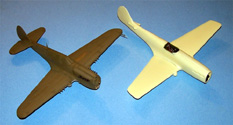
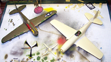
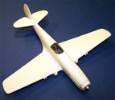
You may click on the small images above to view larger pictures
1/7/07
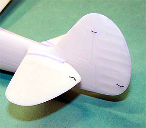
The kit includes a few fine actuators for the various trim tabs on the tail, each of these were removed from the fret with a razor knife and attached with fine spots of medium superglue. Next the cockpit and intakes were masked off with damp tissue paper and the model was primed with Mr. Surfacer 1200 cut 50% with lacquer thinner. This is a slight diversion from my normal approach with natural metal finishes where I use Krylon Gloss Black as my primer � I wanted to try something different. The model did need a light sanding after the primer dried to get a nice smooth surface but nothing excessive.
The base color I used was Alclad aluminum then control surfaces were masked off and painted with Alclad dark aluminum. Other panels on the wings and fuselage were masked and done with duraluminum. Once all the metal lacquers were done I masked off the anti-glare panel and did it with olive drab and now the masks can come off. 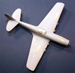. All the various landing gear covers and radiator flaps were placed on a piece of tape and done with duraluminum. Landing gears are painted neutral gray then have brake lines added from fine solder with hold downs made from thin strips of masking tape. Once the paint is dry they are assembled and attached to the model.
I�ll let this stuff cure for a little while and work on the vacuform canopy. I think one of the biggest challenges in working with a vac canopy is getting it separated from the rest of the plastic sheet. My approach involves using a Dremel tool with a cut-off wheel. I�ll work around the edge of the canopy leaving about a sixteenth on an inch of excess material on the canopy until it is free from the molding sheet. Now with the flat side of the cut-off wheel I will grind away the remaining material. Lastly I use a fresh razor knife to make any final trimming adjustments required. This is not a process you will want to undertake if you have only one canopy and have not done this before. After doing a few like this you can get pretty comfortable and zip off a canopy in about twenty minutes. Once it is all trimmed up and wiped off it gets dipped in Future and allowed to cure.
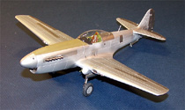
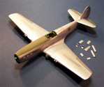
The exhaust manifolds are really nice on this kit � easily as good as anything you might get from Ultracast. I painted these with Model Master lacquer burnt iron, sawed them free of the pour stub with my new JCL razor saw and superglued them in place. The propeller and spinner are about the last thing I need to get done now. The spinner needs to be drilled out for each blade and for the center shaft. The blades themselves need very little prep work before they are painted black with the yellow tips then Futured and decaled. A couple of other small details are addressed such as painting the radiator inlets with some Gunze burnt iron. Once the Canopy had dried I held it in place and traced the forward outline with the tip of my razor knife to create a paint line for the black interior area. With thin strips of masking tape I masked off the canopy and prepainted it interior green. I will be putting Alclad over top this and great care must be taken to apply only very light coats else the enamel undercoat will bubble and make things look like crap. Okay, the propeller blade decals have dried and been sealed with another coat of Future, once dry they are installed in the hub with some superglue and the hub is attached to the shaft.
We are almost done, the whole model is coated with Future cut 25% with isopropyl alcohol, allowed the dry then the decals are applied. A final coat of Future seals everything and the canopy can be attached with some clear parts cement. The only sludge wash that was applied to the model was at the flight control seams. This is a prototype aircraft that never saw combat so should be in very good condition � nice and clean. Last item is an aerial made from invisible thread drawn across a black magic marker attached with a spot of superglue and this build is complete.
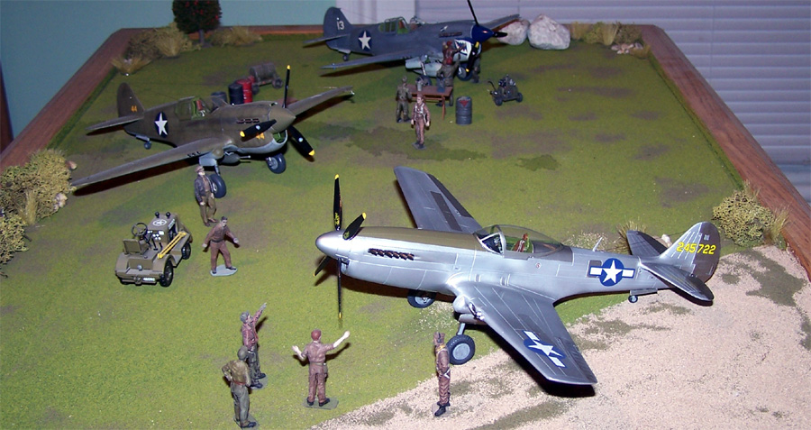
You may click on these small images to view larger pictures
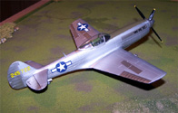
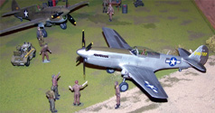
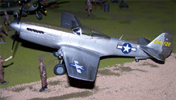
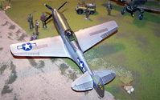
Final Thoughts
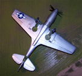
I have built several all resin kit now and must say this has been the most pleasant build of the lot. There have been a few that hung on me like a dead albatross and I could just not get done no matter what but not this one. The parts all fit together exactly as they should and other than a few micro bubbles was no more difficult than a plastic kit. Only minimal filler was needed and none of the parts showed any warpage issues. Now that I think about it the last Planet Models kit I did was a piece of cake also � the Luft �46 project Julia. If you are considering stepping into all resin kits it would do you well to take a look at the various Plane Models offerings � you�ll not be disappointed.